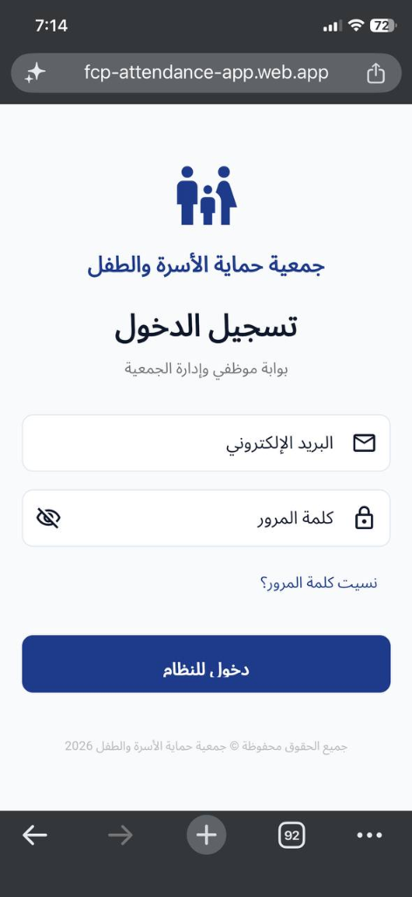
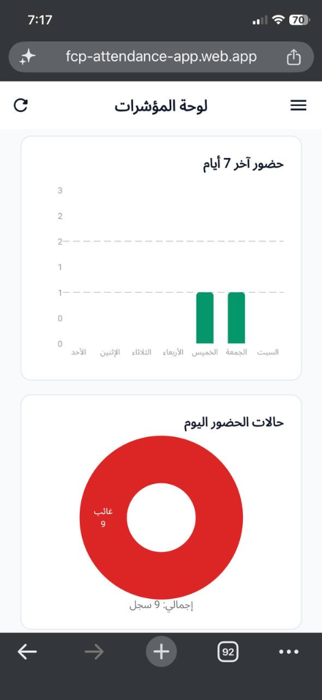

نظام الحضور الذكي لجمعية حماية الأسرة والطفل
دقة في المواعيد، موثوقية في الأداء، وحلول تقنية تعزز كفاءة العمل الإداري والميداني.
منصة رقمية متكاملة لإدارة دوام الموظفين، الورديات، المأموريات الميدانية، والإجازات بأعلى معايير الدقة والأمان.

إدارة الحضور بطريقة أكثر ذكاءً
يُعد تطبيق «نظام حضور جمعية حماية الأسرة والطفل (FCP Attendance)» نقلة نوعية في أتمتة إدارة الموارد البشرية ومتابعة الكوادر العاملة في الجمعية.
تم تصميم التطبيق خصيصاً لتلبية متطلبات بيئة العمل في الجمعية بمختلف قطاعاتها، سواء للفرق الإدارية داخل المقرات أو لفرق الميدان والمشاريع الخارجية، من خلال دمج تقنيات الموقع الجغرافي الذكي (GPS) ورموز الاستجابة السريعة (QR Code) مع أعلى مستويات حماية البيانات.

كل ما تحتاجه لإدارة الحضور والدوام
حلول ذكية تساعد الإدارة والموظفين على إدارة الحضور والدوام والمهمات اليومية بكفاءة أعلى.
حضور وانصراف ذكي ودقيق
التحقق التلقائي من وجود الموظف داخل النطاق الجغرافي المعتمد لمقرات الجمعية أو مواقع المشاريع قبل إتاحة تسجيل الحضور.
أمان وربط الأجهزة
ربط حساب الموظف بجهازه المعتمد للمساعدة في الحد من تسجيل الحضور بالنيابة أو استخدام أجهزة غير مصرح بها وضمان أصالة العمليات.
إدارة الورديات وساعات العمل
دعم الورديات المتعددة (صباحية، مسائية، مشاريع خاصة) وحساب فترات السماح والتأخير والانصراف المبكر وساعات العمل الفعلية تلقائياً.
المأموريات والمهام الميدانية
تسجيل ومتابعة مأموريات العمل والمشاريع الخارجية وربطها بسجل الموظف مع توثيق إحداثيات ومواعيد إنجاز المهام في الميدان.
الإجازات والأذونات
تقديم طلبات الإجازات والأذونات ومتابعة دورة الموافقات إلكترونياً مع إشعار الموظف بحالة الطلب واحتساب الرصيد المتبقي بدقة.
التقارير والتحليلات
لوحة معلومات وتقارير تفصيلية تساعد الإدارة على متابعة الحضور والانضباط، رصد نسب الغياب والتأخير، واستخراج البيانات الإحصائية.
كيف يعمل النظام؟
دورة عمل انسيابية تمكن الموظف من إثبات حضوره ومتابعة دوامه في ثوانٍ معدودة.
تسجيل الدخول وربط الجهاز
يقوم الموظف بتسجيل الدخول ببياناته الرسمية واعتماد الجهاز المخصص لضمان الخصوصية والأمان.
الوصول إلى موقع العمل
يتحقق التطبيق تلقائياً من وجود الموظف داخل النطاق الجغرافي المصرح به للمقر أو المشروع.
تسجيل الحضور
يؤكد الموظف حضوره بضغطة واحدة ويحصل على تأكيد فوري بوقت وتاريخ الحضور وحالة الوردية.
متابعة الدوام
يمكن للموظف متابعة ساعات العمل الفعلية، تقديم الإجازات، وتوثيق المأموريات بكل شفافية.
كل ما يحتاجه الموظف في تطبيق واحد
شاشات مبسطة تجمع كل تفاصيل الدوام، الساعات، الإجازات، والملف الوظيفي في متناول يدك.
لوحة تحكم الموظف الذكية
واجهة مركزية أنيقة تمنح الموظف نظرة فورية وشاملة على حالة دوامه اليومي، ساعات العمل المتبقية، والخدمات الذاتية السريعة.
رؤية أوضح للإدارة وصناع القرار
توفر بوابة الإدارة أدوات لمتابعة الحضور والغياب، إدارة الموظفين والأجهزة، مراجعة الطلبات، وإعداد التقارير اللحظية التي تدعم الشفافية والانضباط الإداري داخل الجمعية.

بيانات واضحة تساعدك على اتخاذ القرار
تقارير شاملة ومتنوعة تعكس الواقع التشغيلي وتدعم التخطيط الإداري الفعال لكوادر الجمعية.
تقرير الحضور اليومي
بيان لحظي يوضح حركة الدخول والخروج لكافة الموظفين على مدار اليوم مع أوقات الدوام الفعلية.
تقرير الحضور الشهري التراكمي
ملخص شهري شامل لاحتساب إجمالي الساعات المستحقة، الساعات الإضافية، وأيام العمل المكتملة.
سجل التأخير والانصراف المبكر
رصد دقيق لفترات التأخير عن بداية الوردية أو مغادرة المقر قبل انتهاء ساعات العمل الرسمية.
تقرير الغياب والانقطاع
إحصائية دورية ترصد حالات الغياب بعذر أو بدون عذر وتساعد في تقييم نسب الانضباط الوظيفي.
بيان الإجازات والأذونات
أرشيف لطلبات الإجازات المعتمدة وأذونات الخروج المؤقتة وأرصدة الموظفين المستحقة.
مأموريات ومشاريع الميدان
توثيق مهام فرق الحماية والزيارات الميدانية والمشاريع الخارجية الخاصة بالجمعية.
من الشاشة الرقمية إلى التقرير الرسمي المعتمد
يتيح النظام استخراج تقارير الحضور والانصراف ومتابعة الإنجاز والدوام بضغطة زر وتوليد مستندات PDF رسمية تتضمن ترويسة الجمعية، ملخص الأقسام، ونسب الالتزام العامة.
تقنية حديثة، وتجربة استخدام بسيطة
تم بناء التطبيق باستخدام تقنيات حديثة تتيح تجربة استخدام سلسة وقابلة للتوسع.
Flutter SDK
تطوير عصري متعدد المنصات يمنح سرعة فائقة وتجربة مستخدم متناسقة.
Android
تطبيق مخصص يعمل بكفاءة على كافة هواتف أندرويد الحديثة والاقتصادية.
Windows & Web
بوابة ويب وسطح مكتب لإدارة العمليات ومتابعة الكوادر من أجهزة الحاسوب.
Supabase Cloud
قواعد بيانات سحابية متقدمة ومصادقة مشفرة تدعم التحديثات اللحظية.
GPS & Geofence
تحديد دقيق للموقع الجغرافي ونطاقات العمل المعتمدة لمنع التسجيل الوهمي.
قيمة مضافة للإدارة والكوادر معاً
منظومة متكاملة ترفع كفاءة التدفق الإداري وتوفر على الجميع الوقت والجهد.
للإدارة وصناع القرار
للموظفين والكوادر العاملة
الأسئلة الشائعة
كل ما تود معرفته حول آلية عمل تطبيق الحضور وسياسات الاستخدام في الجمعية.
تحتاج إلى المساعدة؟
فريق الدعم الفني جاهز لمساعدتك في استخدام النظام وتفعيل حسابك أو أجهزتك المعتمدة.